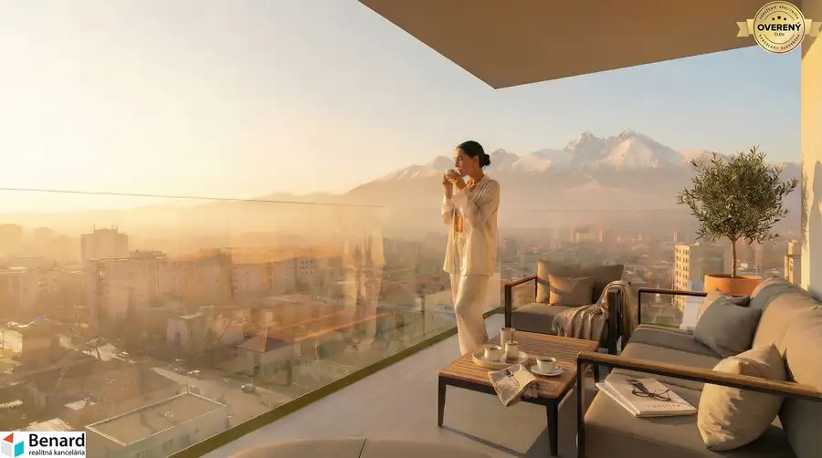

Na predaj 2- izbový byt 7-f v corrib Tower
Poprad
- Dispozícia2-izbový
- Plocha59.41 m²
- Poschodie7. z 11
- Stavholopriestor
- Vlastníctvoosobné
- Energetická triedaA
O nehnuteľnosti
Vitajte v Corrib Tower
Na prestížnej adrese, kde moderná architektúra a komfort tvoria dokonalú harmóniu. Naším cieľom bolo vytvoriť priestor, ktorý nie je len stavbou, ale skutočným domovom pre každého, kto miluje dynamiku mesta a zároveň túži po výhľade na majestátne štíty Tatier. Bývanie na Levočskej ulici v Poprade znamená komfort v každom detaile.
Prečo bývať v Corrib Tower?
Výhľad na Vysoké Tatry
- dominantou projektu je panoramatický výhľad na naše veľhory
- sledovať západ slnka nad štítmi priamo z vašej obývačky sa stane obľúbeným rituálom
Centrum mesta na dosah
- zabudnite na dlhé dochádzanie
- či už obľubujete ranné espresso v útulnej kaviarni alebo večernú prechádzku v parku, centrum mesta vám ponúka tie najlepšie prevádzky priamo pod oknami
Komfort pre rodiny
- priamo v areáli projektu sme pre vašich najmenších vybudovali moderné detské ihrisko, kde môžu tráviť čas na čerstvom vzduchu
- školy, služby a občiansku vybavenosť máte v blízkosti bývania
Všetko dôležité pre vaše zdravie na jednom mieste
- veríme, že skutočný komfort bývania sa meria aj tým, ako rýchlo a pohodlne vybavíte dôležité záležitosti spojené so zdravím
- zabudnite na štartovanie auta či hľadanie parkoviska - poliklinika s lekárňou priamo v areáli vám ušetrí čas aj energiu
- všetko potrebné máte na dosah, pohodlne a bez zbytočných starostí
Zelená oáza v meste
- hoci ste v srdci diania, v okolí domu sme zachovali dostatok zelene pre oddych a regeneráciu
- priamo v areáli sme kládli dôraz na parkovú úpravu a estetickú výsadbu, ktorá vytvára prirodzenú bariéru od mestského prostredia
- je to priestor, kde si môžete v pokoji prečítať knihu na lavičke, zatiaľ čo vaše deti sa hrajú na modernom a bezpečnom ihrisku
Svet relaxu a zábavy
- len pár minút cesty od vášho nového domova sa otvárajú brány do sveta vodnej zábavy AquaCity Poprad – 13 bazénov, tobogany a špičkové wellness
- ideálne miesto na regeneráciu po turistike, doprajte si saunový svet alebo relaxačné masáže
- ak hľadáte program na víkend, detské bazény a animácie sú zárukou, že vaše deti sa nebudú nudiť v žiadnom počasí
Hokejové srdce mesta
- zažite pravú hokejovú atmosféru v slovenskej extralige
- môžete si vychutnať zápasy domáceho HK Poprad v jednom z najmodernejších hokejových stánkov pod Tatrami
- bývanie v Corrib Tower znamená, že k pulzujúcej atmosfére popradského hokeja to máte doslova na skok
- zimný štadión mesta Poprad sa nachádza v bezprostrednej blízkosti, čo z vášho nového domova robí ideálnu adresu pre každého športového nadšenca
Benefity
- exteriérové rolety/žalúzie - príprava na všetky byty
- video vrátnik a kamerový systém - špičkové technológie, ktoré strážia váš domov, kým vy si nerušene užívate jeho pohodlie
- príprava na klimatizáciu, v projekte je zabezpečená kompletná príprava na inštaláciu klimatizácie, získate tak jednoduchú cestu k maximálnemu tepelnému komfortu počas horúcich dní
- fotovoltická elektráreň a tepelné čerpadla Váš komfort zabezpečuje kombinácia fotovoltiky a výkonného tepelného čerpadla vzduch/voda
Ekologická energia zo slnka napája kúrenie, osvetlenie aj ohrev vody. Tento systém výrazne znižuje vaše mesačné prevádzkové náklady. Tepelné čerpadlo sa postará o úsporný ohrev teplej vody a stabilné teplo v celom priestore. Využívanie obnoviteľných zdrojov chráni životné prostredie aj vašu peňaženku.
- Inteligentný manažment tepla, vlastná plynová kotolňa v bytovom dome v kombinácii s modernými bytovými stanicami vám umožňuje nastaviť si ideálne teplo v každej miestnosti
CORRIB TOWER
- je postavený z najlepších materiálov, betónový skelet, obvodové murivo POROTHERM 300, medzibytové priečky akustické tehly, zateplenie sklennou vatou, okna kombinácia plast a hliník a mnoho ďalších kvalitných materiálov
Férové financovanie
- výber bytu jednoducho a rýchlo prostredníctvom nášho webu alebo po konzultácii s maklérom si vyberte váš nový byt
Financovanie bytov
- 20% pri podpise zmluvy o budúcej kúpnej zmluve
- 80% pri kolaudácii
Zvyšná časť ceny bytu sa vyplatí pri kolaudácii bytového komplexu
Časový harmonogram
- výstavba Q2 2026
- ukončenie výstavby Q2 2028
Využite skvelú príležitosť a bývajte v
CORRIB TOWER
kde sa nachádza 84 bytových jednotiek a 3 nebytové jednotky. Pre väčší komfort obyvateľov sú v bytovom dome zriadené 2 výťahy.
V ponuke máme na predaj 2-izbový byt 7-F s lodžiou a pivnicou, nachádzajúci sa na 7 NP o celkovej výmere 59,41 m2. K bytu si môžete zakúpiť garážové státie v 1. podzemnom podlaží, vonkajšie parkovacie miesto alebo parkovacie miesto v parkovacom dome.
Neváhajte a pozrite si celú našu ponuku na corrib.sk
Parametre
| Úžitková plocha | 59.41 m² |
|---|---|
| Poschodie | 7/vyššie poschodie |
| Počet poschodí | 11 |
| Vlastníctvo | osobné |
| Stav | holopriestor |
| Odvoz odpadu | áno |
| Plyn | áno |
| Lódžia | áno |
| Výťah | áno |
| Postavené z | tehla |
| Zateplený objekt | áno |
| Klimatizácia | predpríprava |
| Káblová televízia | áno |
| Energetický certifikát | A |
| Okná | iné |
| Novostavba | áno |
| Dátum zverejnenia | 20. 8. 2026 |
Kde to je
Mohlo by Vás zaujímať
 Byt10
Cena dohodouNa predaj 2- izbový byt 2-i v corrib Tower
Poprad
2-izbový11 m²2. podlažie
Vitajte v Corrib Tower Na prestížnej adrese, kde moderná architektúra a komfort tvoria dokonalú harmóniu. Naším cieľom bolo vytvoriť priestor, ktorý…
Byt10
Cena dohodouNa predaj 2- izbový byt 2-i v corrib Tower
Poprad
2-izbový11 m²2. podlažie
Vitajte v Corrib Tower Na prestížnej adrese, kde moderná architektúra a komfort tvoria dokonalú harmóniu. Naším cieľom bolo vytvoriť priestor, ktorý…

Byt10 Cena dohodouNa predaj 2- izbový byt 3-i v corrib Tower Poprad 2-izbový51.09 m²3. podlažie Vitajte v Corrib Tower Na prestížnej adrese, kde moderná architektúra a komfort tvoria dokonalú harmóniu. Naším cieľom bolo vytvoriť priestor, ktorý… Byt10
Cena dohodouNa predaj 2- izbový byt 4-g v corrib Tower
Poprad
2-izbový76.78 m²4. podlažie
Vitajte v Corrib Tower Na prestížnej adrese, kde moderná architektúra a komfort tvoria dokonalú harmóniu. Naším cieľom bolo vytvoriť priestor, ktorý…
Byt10
Cena dohodouNa predaj 2- izbový byt 4-g v corrib Tower
Poprad
2-izbový76.78 m²4. podlažie
Vitajte v Corrib Tower Na prestížnej adrese, kde moderná architektúra a komfort tvoria dokonalú harmóniu. Naším cieľom bolo vytvoriť priestor, ktorý…